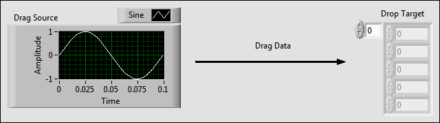

Drag-and-drop events are associated with the drag source and drop target. The drag source is the control that you want to provide the drag data, and the drop target is the control that you want to accept the data. This topic explains how to drag and drop data from a waveform graph to an array of numeric controls. Therefore, the drag source is the waveform graph, and the drop target is the array, shown as follows:
When you prepare the VI to detect when the user causes drag-and-drop events to occur, identify controls as the drag source and drop target by setting the controls to be the event source for the relevant events.
After you identify which controls to use as the drag source and drop target, prepare the VI to detect when the user causes drag-and-drop events to occur.